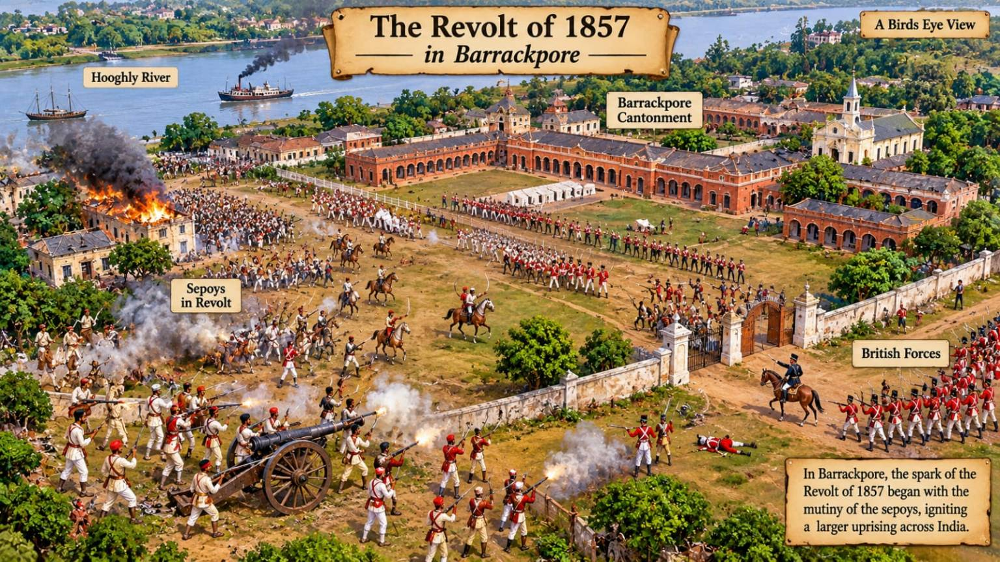

The Revolt of 1857 in Barrackpore
Discover the history and heritage of Barrackpore.

History of the Revolt
The Revolt of 1857 was a major uprising against British rule in India. It began among Indian soldiers known as sepoys and spread to several parts of the country.
Did You Know?
Barrackpore is closely connected with the events involving Mangal Pandey in 1857.
Mangal Pandey
Mangal Pandey was an Indian soldier in the Bengal Army. His actions at Barrackpore on 29 March 1857 became an important event leading up to the Revolt of 1857.
Historic Places of Barrackpore
Explore some well-known heritage locations.
Mangal Pandey Park
A park associated with the memory of Mangal Pandey.
Barrackpore Park
A historic park with colonial-era connections.
Gandhi Ghat
A well-known riverside location in Barrackpore.
Important Dates
29 March 1857
Mangal Pandey's actions at Barrackpore.
8 April 1857
Mangal Pandey was executed.
May 1857
The uprising spread from Meerut to other regions.
Historical Importance
The Revolt of 1857 became an important turning point in Indian history. It inspired later generations in their struggle against British rule.